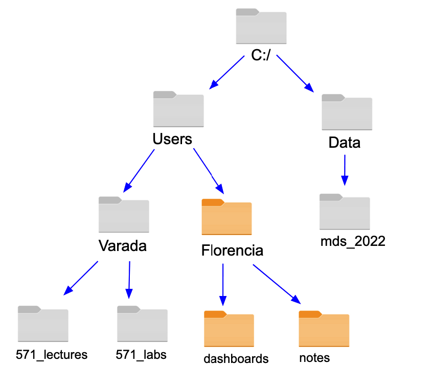

Introduction to MDS software and Bash
Learning outcomes
- Recognize the directory hierarchy as it is commonly represented in diagrams, paths, and file explorer software.
- Distinguish common operators and representations of the different filesystem elements typically used in Bash.
- Explore the filesystem using Bash commands as
ls,pwdandcd. - Translate an absolute path into a relative path and vice versa.
- Use command-line arguments to produce alternative outputs of commands.
- Create, edit, move, and delete files and folders using the command line and VS Code.
Introduction
Welcome to Computer Platforms in Data Science!
This week we are going to learn about exploring the filesystem, using the command line, and some other useful tools.
Lecture 1 Activity 1
What is a Data Scientist?
Someone whose job is to:
- Extract value from data through reproducible and auditable processes.
- Apply machine learning algorithms.
- Analyze large volumes of often unstructured data to produce meaningful insights. https://www.springboard.com/blog/data-science/data-science-definition/
- Get well paid.
Most of the tools we are going to learn during DSCI 521 are tools that programmers used. Programming involves interacting with the system using commands
The MDS software stack
The following are the core programs that you will be using throughout the MDS program.
- Bash: Helps you navigate filesystem, run programs, and automate tasks on your computer.
- Git and GitHub: Used to track changes in your code and collaborate with others on projects.
- Python and R: Popular programming languages for analyzing data, creating visualizations, performing statistical analysis, and building machine learning models.
- Visual Studio Code, JupyterLab, RStudio, and Positron: Tools that provide an integraded development environemnt (IDE) that make writing and running code easier. They also help create interactive notebooks and reports.
These programs also have active development communities and are open source, which means that anyone can read the source code and contribute to these projects. Open source programs have many benefits, such as
- Being able to use the software after leaving school without paying exorbitant amounts of money.
- Having access to the source code can help you learn and fix bugs (even closed-source commercial software has bugs, but they are just harder to see and fix).
- Open-source software is customizable and flexible.
- It is becoming the standard in many tech companies.
- Being a part of an awesome and active community!
Lecture 1 Activity 2
You have already learn how to use some commands using JupyterLab IDE. Do you find it easier to use the command line or JupyterLab user interfase?
Why might one be better than the other? And in what scenarios?
Note: Command palette
Introduction to computing
Before we get into the different applications, let’s talk about computing. Essentially, computing is about humans communicating with machines to modulate flows of current in hardware. Early examples of human computer communication were quite primitive and included actually disconnecting a wire and connecting it again in a different spot.
Luckily, we are not doing this anymore; instead we have graphical user interface with menus and buttons, which is what you are commonly using on your laptop.
These graphical interface can be thought of as a layer (or shell) around the internal components of your operating system. Shells exist as an intermediate that both makes it easy for us to express our thoughts, and for computers to interpret them.
Text-based communication
We will learn how to communicate to a computer via a text-based shell, rather than a graphical one.
Using a text-based shell might at first seems counter-intuitive, since the reason for creating a shell in the first place was to facilitate user interaction with the computer. So now that we have these easy to use graphical user interfaces (GUIs), why would anyone in their right mind go back to using a text based interface?
Well, it’s partly a misconception, GUIs are nice when you are new to something, but text based interfaces can be faster and easier to use when you know what you are doing, and provide a lot more flexibility.
We can compare it to learning a language, in the beginning it’s nice to look things up in a dictionary (or a menu on the computer), but once I know what I want to say, it is just easer to say or type it directly, instead of looking in submenues.
And by extension, it would be even faster to speak or even just think of what you want to do and have it executed by the computer, this is what speech- and brain-computer interfaces are concerned with.
Bash
bash is the most commonly used text shell. You have it installed on your computer by default if you are using Mac or Linux machine, and if you are on a Windows machine you downloaded bash as part of the setup instructions. For Macs the default shell is zsh, but we had you change it to bash in our setup instructions. Sometimes we might use “prompt”, “command line”, or “terminal”, which for the purposes of this lecture, refers to the same thing.
The abbreviation BASH stands for Bourne Again SHell. Other shells existed before Bash, and one of the most successful early shells was invented by Stephen Bourne at Bell Labs in 1977, which he called the Bourne Shell. In 1989, the Free Software Foundation improved the Bourne Shell and as a pun, named it the Bourne Again Shell to symbolize it was now “reborn” with new features.
Text-based shells are also called command-line interfaces (CLI). The heart of every CLI is a read-evaluate-print loop (REPL). When we type a command and press Return (also called Enter) the CLI reads the command, evaluates it (i.e., executes it), prints the command’s output, and loops around to wait for another command. Let’s see how to do that next!
Your first words
The default prompt character:
$Typing in the whoami command for showing your username and pressing enter to run it:
whoamiusernameThe pwd command stands for Print Working Directory.
pwd# Linux
/home/username
# MacOS
/Users/username
# Windows
/c/Users/usernameOur first shell commands will let us explore our folders and files, and will also introduce us to several conventions that most command line tools follow. To start, when bash runs it presents us with a prompt to indicate that it is waiting for us to type something. This prompt is a simple dollar sign by default ($). However, different shells may use a different symbol: for example, the default zsh shell on Macs uses %.
If we run the command whoami, the computer will tell us who we are (our login name), and if we run pwd (Print Working Directory) the shell tells us where we are (the home directory by default when we launch the shell).
Each user has a home directory; the function and location of this directory differs a little bit between operating systems. On Linux it is usually /home/username, on MacOS it is /Users/username, and on Windows it will show up as /c/Users/username (if you have Git Bash installed). Our examples in this module shows the Linux directory structure, but you will see that some of the other modules show what we would see on MacOS or Windows.
Exploring the files system
Now that we know where we are, let’s see what we have using the command ls (short for “listing”), which prints the names of the files and directories in the current directory.
lsDownloads Music
Documents todo.txt
Pictures my_programAgain, our results may be different depending on our operating system and what files or directories we have.
Using commands with options
ls -FDownloads/ Music/
Documents/ todo.txt
Pictures/ my_program*We can modify output of ls by providing optional “flags”. In this example, the -F option tells ls to decorate the output to show what type of file each entry is. A trailing / indicates a directory, while a trailing * tells us the file is a runnable program. Depending on our setup, the shell might also use colors to indicate whether each entry is a file or directory.
Lecture 1 Activity 3
Can you recognize the following folders in the picture?
- Home directory
- Parent directory
- Working directory
- Root directory

Lecture 1 Activity 4
- What would the following commands do? Would them be possible to use with the command
lsinstead ofcd?
A. cd . B. cd .. C. cd ~ D. cd
- Run the following commands in your home directory. Explore the content of the folder
example_521using your favourite favourite file manager (Finderfor Mac),File Explorerfor Windows, and any file manager in Linux) Can you draw a diagram with the content of that folder? What command should you run in the shell to find the folderfind_me.
Lecture 1 Exercise 1
Use command line to:
- figure out where you are when you open your command line
- navigate to your Documents folder
- navigate from your Documents folder to your Desktop
Lecture 1 Exercise 2
Let’s check out the documentation of ls. What does the option -a do? What does the ./ and ../ folders represent as output of this command?
Working with Files and Directories
We now know how to explore files and directories, but how do we create them? That’s what we will find out in this chapter.
cd ~/Documents
# MaKe Directory
mkdir notesNaming guidelines
Let’s go back to the ~/Documents directory and create a subfolder called notes. For this we first use the ~ home directory shortcut, and then the mkdir command.
We will talk more about useful naming conventions in module 6. For now it is enough if you remember these three guidelines.
- Don’t use spaces
- Don’t begin the name with a
-(hyphen) - Stick to digits and letters (preferably lower case)
Creating a file
Since we just created the notes directory, ls doesn’t display anything when we ask for a listing of its contents.
ls -F notesLet’s change our working directory to notes, then use the VS Code editor to create a file called my-first-note.md. The command to invoke VS Code from the command line is code, and if we pass it a filename as an argument, the file will be created in the current directory. Now try launching it yourself!
cd notes
code my-first-note.mdThe .md syntax means that we want to create a markdown file. File extensions like .md and .py don’t change anything about the content of the file, but they are an indicator to other program such as VS Code what type of content we are going to put inside the file. These program can then activate special functions for certain files, such as using the appropriate colors to highlight headings and functions.
Let’s move on to the next slide to see how it looks when we are editing file in VS Code.
Editing a file in VS Code
This is what it looks like to edit a text file in VS Code. You will see that there is a small white circle next to the file name. This is an indication that the file is not saved yet.
When we are done adding our edits, we can hit Ctrl + s to save the file, which will make the white circle disappear. After saving the file, you can optionally close VS Code before returning to the terminal.
We are only using VS Code as a simple text editor here, but it is worth knowing that you can use use it as a powerful editor for code as well.
Viewing the content of a file in the terminal
lsmy-first-note.mdhead my-first-note.mdThese are the first
few lines of content
in the file.Notes: If we now type ls we will see the name of the file we just created in VS Code. To see the content of the file, we can use the head command. head show the first few lines of a file (just as when we use df.head() in pandas), and optionally takes an argument for how many lines to show: head -n 10 (the default is five).
head works with all plain text files, such as code and markdown files, but not with binary files such as word documents, spreadsheets, or images. To see the last few lines, you can use tail instead of head.
Moving files and directories
mv my-first-note.md ..
ls ..Downloads/ Music/ my-first-note.md
Documents/ todo.txt
Pictures/ my_program*mv ../my-fist-note.md .
lsmy-fist-note.mdTo move a file around, we can use the mv command. For example, to move the text file we just created to the parent directory, we would type:
mv my-first-note.md ..This moves it to the parent directory, and keeps the name the same as we can see if we do ls ..
If we want to move the file back to the current directory, we can use the . shortcut:
mv ../my-fist-note.md .Renaming a file
mv my-fist-note.md note_2022-06-20.md
lsnote_2022-06-20.mdmv -v notte_2022-06-20.md note_2022-06-20.mdrenamed 'notte_2022-06-20.md' -> 'note_2022-06-20.md'Notes: Renaming a file can be thought of as moving it to a new filename either in the same or a different directory. This might initially seem a bit different from a graphical file browser, where renaming and moving are two distinct functions, but the underlying operation is actually the same.
To give our file a more descriptive name that includes the date we created this file, we would type mv my-fist-note.md notte_2022-06-20.md. We intentionally made a typo here, let’s fix it while showing off the functionality of the -v (verbose) option, which prints what was moved/renamed so that it is easier to keep track of renamed 'notte_2022-06-20.md' -> 'note_2022-06-20.md'.
We must be careful when specifying the destination because mv will overwrite existing files without warning. The option -i (“interactive”) makes mv ask us for confirmation before overwriting,. mv also works on directories where it renames the directory without changing its contents.
Copying files and directories
# Copy the file to the parent directory
cp note_2022-06-20.md ..# Create a backup copy in the same directory
cp note_2022-06-20.md note_2022-06-20.md.bkp
lsnote_2022-06-20.md
note_2022-06-20.md.bkpNotes: The cp command create a copy of a file. Just as with mv, we optionally rename the file as we are copying it.
Here we first copy the note we created to the parent directory and then show how we could use cp to create a backup of our file in the same directory. Remember that the file extension does not change the content of the file, so this is just a visual indicator to us for what type of file this is.
If we ever wanted to copy a directory, we would have to specify the -r flag, which indicates that we want to copy the directory recursively, i.e. also making a copy of all the directory contents.
Wildcards
touch note_2022-06-20.md.bkp note_2022-07-02.md note_2022-07-02.md.bkp
ls *.bkpnote_2022-06-20.md.bkp
note_2022-07-02.md.bkpls *07*note_2022-07-02.md
note_2022-07-02.md.bkpWildcards (also called “globbing”) simplifies targeting multiple files with similar names in the same command. The most commonly used wildcard is * (a single asterisk). It matches zero or more characters, so typing ls *.md list all of the markdown files in the current directory.
If we wanted to list all the files created in July (month 7), we would need to type ls ls *07*, which means that the filename can include anything before and after 07. If we would have left out the second * and type ls *07 we would not have seen any matches because there is not file that end in 07, they all have some characters after.
Using wildcards is helpful when we want to delete, move, or copy files with a predictable naming pattern.
Searching for text patterns in files
grep "the" note_2022-06-22.mdnote_2022-06-22.md:These are the first
note_2022-06-22.md:in the file.We can use the grep command to search for text in files. To search for the word “the” in our notes file, we can type grep "the" note_2022-06-22.md. This will return every line in the file that contains the word “the”.
Seeing the history of commands
history1 pwd
2 ls
3 cd Documents/
4 cd
5 ls -F -a
6 historyOccasionally, we might want to re-use a command that we used in the past, but don’t remember exactly what it was. The history command can help us with this as it lists all the previous commands we have run and in which order we ran them.
Reading the manual
man lsLS(1) User Commands
NAME
ls - list directory contents
SYNOPSIS
ls [OPTION]... [FILE]...
DESCRIPTION
List information about the FILEs (the current directory by default). Sort entries alphabetically if none of -cftuvSUX
nor --sort is specified.
Mandatory arguments to long options are mandatory for short options too.
-a, --all
do not ignore entries starting with .
-A, --almost-all
do not list implied . and ..
--author
with -l, print the author of each file
-b, --escape
print C-style escapes for nongraphic characters
--block-size=SIZE
with -l, scale sizes by SIZE when printing them; e.g., '--block-size=M'; see SIZE format below
-B, --ignore-backups
do not list implied entries ending with ~
...How can we find out what options like -t and -r do if we don’t know of them already? By reading the built-in help manual! Typing man ls brings up the manual help page for the ls command. You can navigate these pages with Space to go down and b to go Back up. q quits the manual and takes you back to the shell prompt.
Typing / starts a search. Type in the search term and press Enter to be taken to the first hit. To continue to the next search hit, press n, and to go to the previous, press shift + n.
Relative vs absolute path
You are here:
pwd/Users/timberst/DocumentsThese are the files in your current working directory:
lsDSCI-100 MDS-2018-19 textbooks researchYou can navigate to the research directory using one of two options, a relative path:
cd researchor, using an absolute path:
cd /Users/timberst/Documents/researchWhat is the difference? When you use a relative path with a command like ls or cd, it tries to find that location from where we are, rather than from the root of the file system. However, when you specify the absolute path to a directory by including its entire path from the root directory, which is indicated by a leading slash, The leading / tells the computer to follow the path from the root of the file system, so it always refers to exactly one directory, no matter where we are when we run the command.
Lecture 1 Activity 5
My home directory is: /Users/Varada/ The output of running pwd in the command line is: /Users/Varada/canadian_languages
What is the problem if I run the command: cd Users/Varada. How can I solve it?
Select the correct option(s)
A. cd ../../Varada
B. cd ~
C. cd ~/Varada
D. cd /Users/VaradaReferences
- https://merely-useful.tech/py-rse/bash-tools.html
- https://missing.csail.mit.edu/
- https://datascienceatthecommandline.com/2e/chapter-1-introduction.html
- https://datascienceatthecommandline.com/resources/50-reasons.pdf